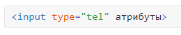
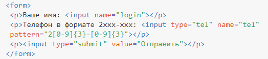

Номер телефона
Чтобы ввести телефонный номер в форме используйте для этого специальное поле, по своему виду и работе оно совпадает с текстовым полем. Синтаксис создания поля для телефона следующий.

Атрибуты полностью совпадают с текстовым полем.
В отличие от веб-адреса или адреса электронной почты, поле для телефона не проверяется на правильность синтаксиса. Это связано с тем, что телефонные номера в разных местах мира могут иметь самые разнообразные формы написания, включать цифры, буквы и другие символы.
Смысл применения этого поля в настройке шаблона ввода телефона, который используется в определённом городе или стране, а также в некоторых расширенных возможностях по управлению стилями. Кроме того, при вводе номера телефона с планшета или смартфона меняется вид клавиатуры.
Создание поля для телефона показано в примере 1. Требуется ввести телефон в указанном формате, иначе браузер выведет сообщение об ошибке и не станет отправлять форму, пока поле не будет заполнено корректно.
Пример 1. Поле для телефона
